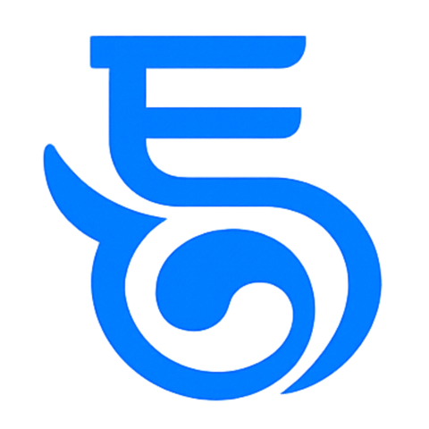

경영전환전략연구소 통 TONG
기업의 막힌 지점을 보고,
다음 경영방식을 설계합니다.
경영전환 · 조직 · 영업 · DX·AI
경영전환 알아보기
→
경영전환론 · 人營財産 · ABCDE · 오약
우리 회사 진단하기
→
5분 경영전환 자가진단
상담하기
→
컨설팅 · 자문 · DX·AI
커피챗 · 미팅 예약
↗
읽기
경영전환 이야기
→
홈페이지 둘러보기
→
www.workstong.com